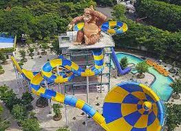

ISTANA PATUNG LILIN
Wahana ini berisi deretan patung selebritis, aktor, aktris, olahragawan, atlet, dan tokoh dunia yang terbuat dari lilin. Contohnya seperti Jackie Chan, Sun Go Kong, Lionel Messi, Bruce Lee, dan sebagainya.
Atlantis Surabaya atau Atlantis Land Surabaya adalah Wisata Surabaya yang memberikan gambaran tentang sebuah kemegahan objek wisata. Atlantis Land Surabaya berdiri di atas lahan dengan luas sekitar 15 ha, dan masih dalam satu kawasan dengan Kenjeran Park. Atlantis Land Surabaya mulai diresmikan pada tahun 2017, dengan pengelolaanya, dan pemiliknya berada di bawah PT. Granting Jaya.
Wahana ini di nikmati dengan menaiki kereta yang dikelilingi oleh berbagai Dinosaurus bergerak didalamnya.
Wahana baru yang dinamakan Istana Es ini diklaim memiliki suhu ruangan mencapai minus 15 derajat. Tak hanya tubuh saja yang merasakan dingin, tampak juga uap dari mulut mengepul saat membuka mulut ataupun sekedar berbicara.
Wahana ini berisi deretan patung selebritis, aktor, aktris, olahragawan, atlet, dan tokoh dunia yang terbuat dari lilin. Contohnya seperti Jackie Chan, Sun Go Kong, Lionel Messi, Bruce Lee, dan sebagainya.

Tornado & Boomerang Slide termasuk wahana ekstrim di Atlantis Land. Yang mana anda aka diajak berseluncur menyusuri lorong dan berseluncur dengan kecepatan tinggi.
Harga tiket masuk ke Atlantis Land Kenjeran Park (KenPark) Surabaya dibanderol sekitar Rp.100.000,- per orang. Untuk anak-anak dengan tinggi badan dibawah 85 cm gratis tanpa dipungut biaya. Harga tiket tersebut sudah termasuk tarif wahana permainan, sehingga Anda tak usah membayar lagi. Jam buka operasionalnya mulai pukul 10.00 – 18.00 WIB.
Lokasi / alamat Atlantis Land Surabaya terletak di Jl. Sukolilo No.100, Sukolilo Baru, Kec. Bulak, Kota Surabaya, Jawa Timur. Keberadaannya masih satu kawasan dengan Kenpark Surabaya sehingga Anda bisa sekaligus berfoto-foto di sana sebelum masuk ke arena Atlantis Land.